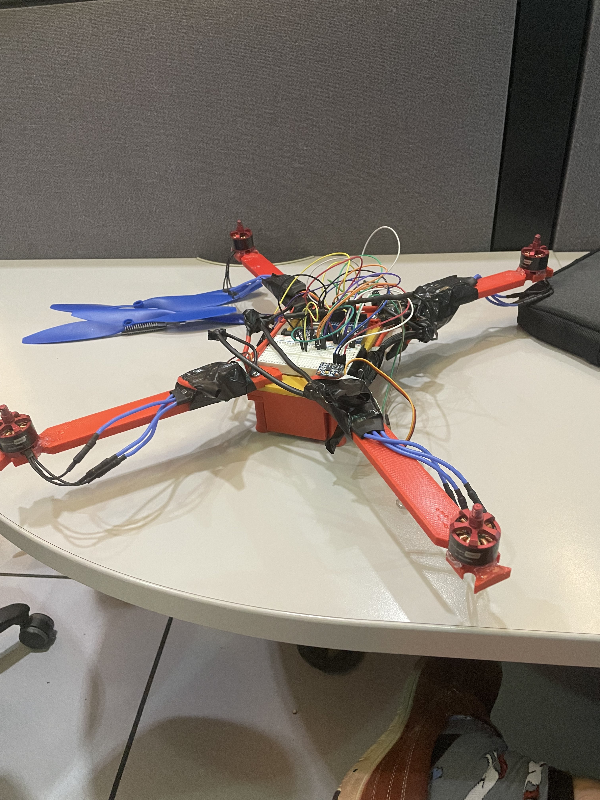
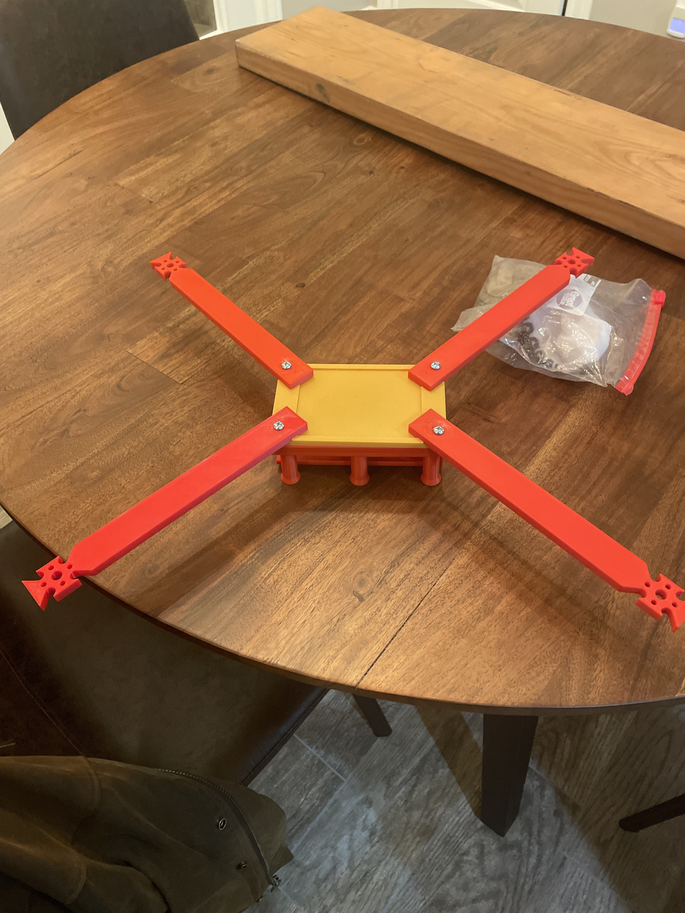
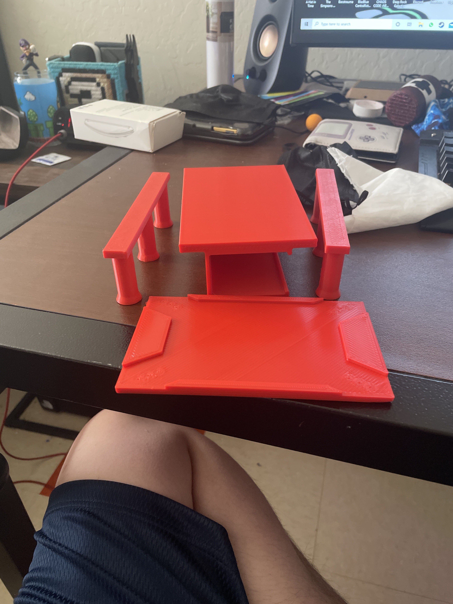
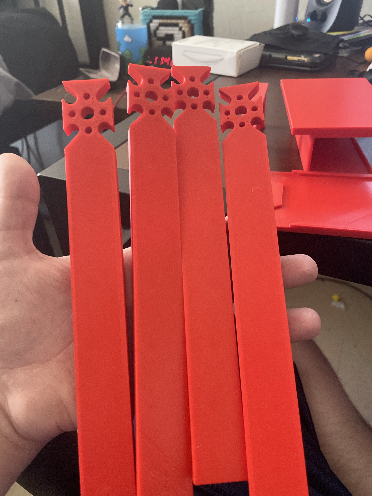
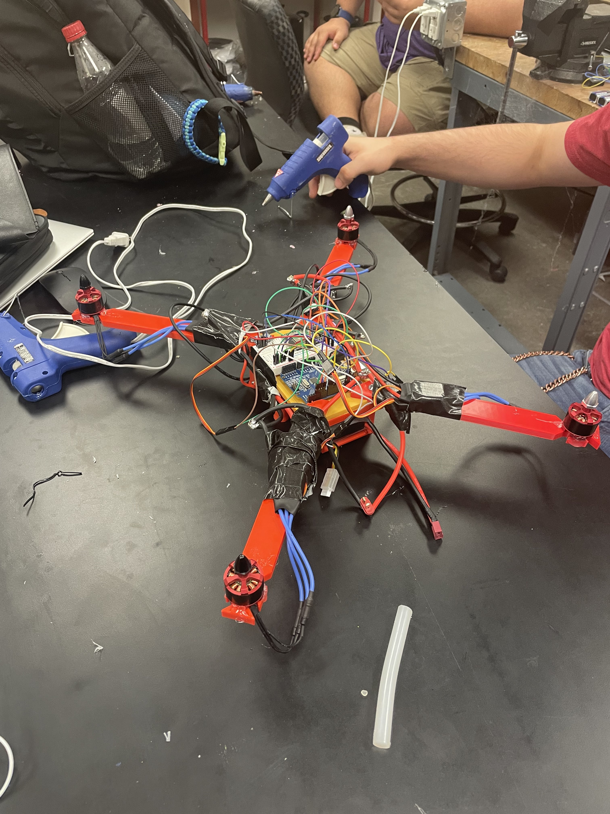
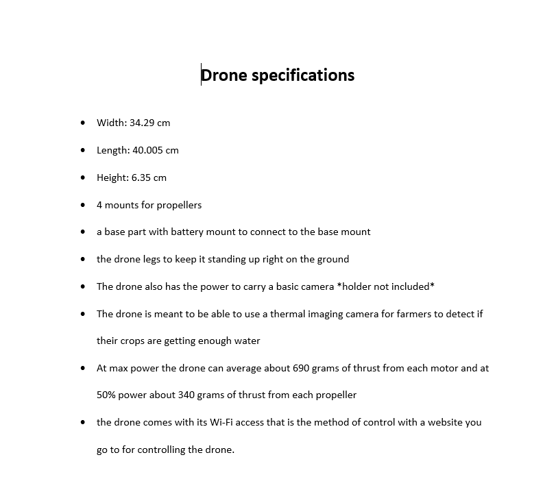
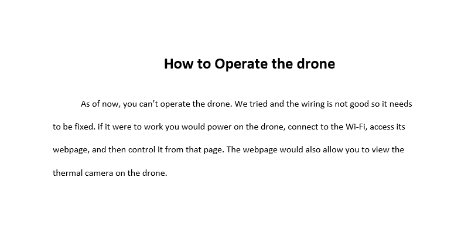

<!DOCTYPE html>
<html>
    <script src="pageTransfer.js"></script>
</html>
<body style="background-color: #12171c;">
    <h1 style="font-weight: bold; color: azure;">The Basic drone</h1><br>
    
    
    
    
    
    <br>
    <h1 style="color: azure;">Lessons learned from this</h1>
    <p style="font-size: large; color: azure;"> We had alot of obticals making this steming from ether inexperience to just cordination,</p><br>
    <p style="font-size: large; color: azure;">But this is what also what showed us valuable lessons for use in the future.</p><br>
    <p style="font-size: large; color: azure;">Which to make this easy I will just list.</p><br>
    <li style="font-size: large; color: azure;">We gained a basic understanding of how we should go about group progects going forward through our failures in communication.</li>
    <li style="font-size: large; color: azure;">We found that their tends to be people better suited to take up certin roles in projects and so a group sould be delegated based on strong points.</li>
    <li style="font-size: large; color: azure;"> Our failure in communication taught up how important it is to keep in the look and ask for updates along with what we can do to hep progress the assignment.</li>
    <li style="font-size: large; color: azure;">But also through this we gained knowlege on things like the Arduino Uno and how to work through getting it to operate and what it's purposes are.</li>
    <li style="font-size: large; color: azure;">Or how to better things like the print for the parts so they fit better.</li>
    <li style="font-size: large; color: azure;">One other thing is that scope is a good thing to limit as we can't forsee the problems that will come up and limiting scope is best so things can be kept withing expextation.</li><br>
    
    <button onclick="goAd();">Drone Ad</button><br>
    
    
</body>